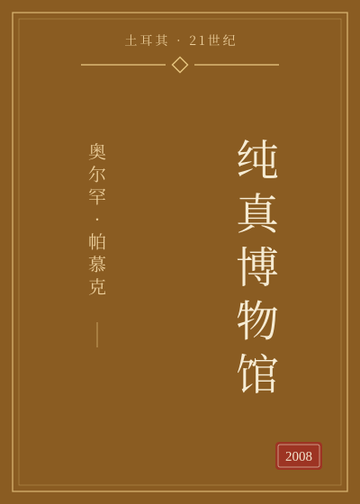
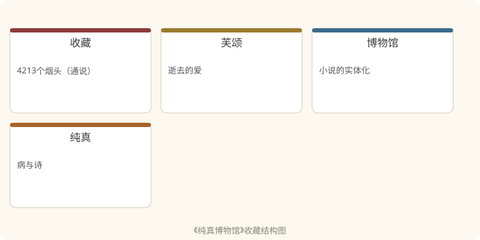

纯真博物馆
一、基本信息
| 作者 | 帕慕克 |
|---|---|
| 成书/出版 | 2008年（作者页 B105 口径：纯真博物馆（2008）） Orhan Pamuk — Encyclopaedia Britannica（百科全书） |
| 国别/地区 | 土耳其 |
| 时代 | 现当代 · 21世纪 |
| 体裁 | 长篇小说 |
| 语言 | 土耳其语 |

《纯真博物馆》收藏结构图（主题·结构图）
二、创作背景
作者页（B105）：帕慕克 major_works 载'纯真博物馆（2008）'（B105 作者页定位，详见 wodemingshan 条核对）。
题材（通说待核）：富商之子凯末尔收藏未婚妻芙颂的4213个烟头——恋物与纯真。
三、内容脉络
芙颂之死与'纯真博物馆'的建立——4213个烟头（通说待核）。
四、主要人物表
| 人物 | 身份 | 说明 |
|---|---|---|
| 凯末尔 | 富商之子 | 收藏者（通说待核） |
| 芙颂 | 远房亲戚 | （通说待核） |
五、主题与艺术特点
- 恋物与纯真（通说）。
- 伊斯坦布尔的物候（通说待核）。
- 小说与真实博物馆的互文（作者真的建了博物馆——通说待核）。
六、影响与评论
- 作者页：帕慕克21世纪代表作（B105 作者页口径）。
Orhan Pamuk — Encyclopaedia Britannica（百科全书） - 伊斯坦布尔真有'纯真博物馆'（2012年开馆——通说待核）。
Orhan Pamuk — Encyclopaedia Britannica（百科全书）
七、阅读建议
难点
- 恋物描写的耐心。
- 伊斯坦布尔地理。
- 《纯真博物馆》（上海人民出版社，通说待核）。
- 土耳其文原版（İletişim）。
帕慕克情感三部曲之末（《红》《雪》《纯真博物馆》）。
八、待核实
- 2008年出版核对。
- 凯末尔/芙颂人名与烟头数（4213说）待核。
- 真实博物馆（2012年开馆）待核。
本页主要来源
帕慕克的其他收录作品：我的名字叫红